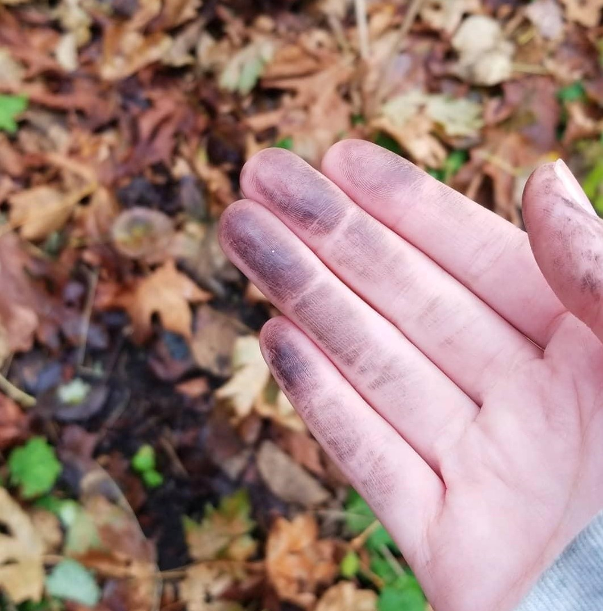
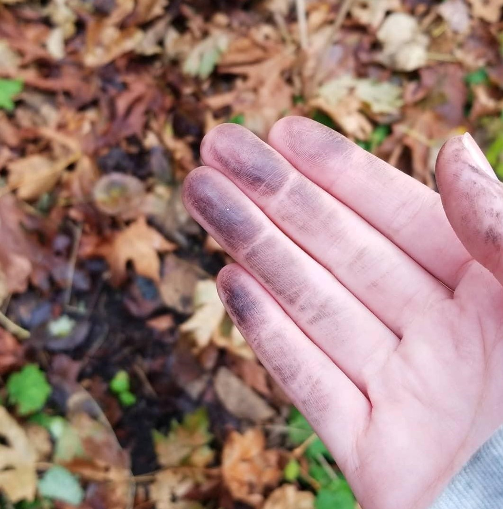

The K'omoks First Nation has partnered with Simon Fraser University Archaeology to enage in two digs at the Puntledge River site, a traditional village of Pentlatch ancestors. Amidst the blackened charcoal earth and mounds of shell fragments, hundreds of carved stone artifacts have been found. These stones, coined "Pentlatch Pebbles", are so unique that the likes of which have only been found in two other places in the world..
These stones, found in the stratafied layers of soil and sediments, have been dated back to XXXXX. Archaeologists were able to date the stones by dating the surrounding charcoal, known as radiocarbon dating. Based on this dating technology, the shell midden began to form in this area around the year AD 375 while the top of the midden in this location dates to approximately AD 612. The other samples were taken from within and near the house floor deposits. These dates indicate that the house was likely in use around AD 700 or slightly later
Stakes made of predominantly Hemlock stretch the length of the estuary on both shorelines, to the extent of Goose Spit and Royston. Radiocarbon dates from a chevron-shaped fish trap has been dated to the late 16th century. The 16th century lasted from 1500 to 1600.
Panels were inserted between the wooden stakes in order to entrap fish within. Panels were comprised two components common in weaving: The warp and the wheft. Warp: Wheft:
Two radiocarbon dates derived from the weft elements of the panel indicate it was constructed in the late 14th century. The 14th century was a century lasting from 1300 to 1400.